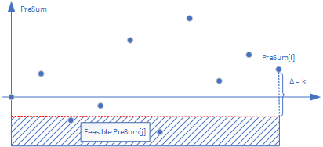
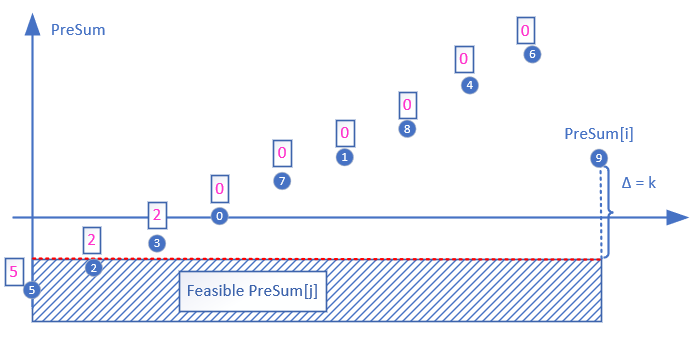
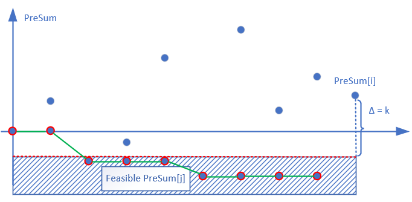
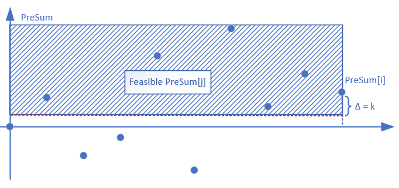
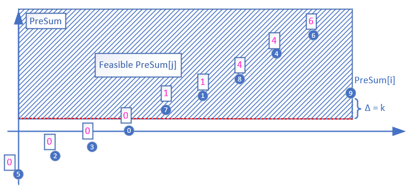
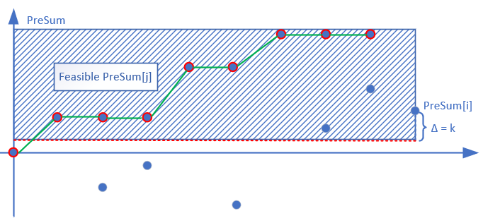

Subarray Sum
Interesting topics on subarray sum.
Classical Problems
We discuss basic problems based on subarray sum.
Maximum Subarray
题目: Given an integer array nums, find the contiguous subarray (containing at least one number) which has the largest sum and return its sum.
分析: 两种做法，贪心和动态规划。
- 贪心: 利用prefix sum的记录，找出之前的最低点，做差即可求current subarray sum，然后全局统计max_sum
- 动态规划: 定义当前元素为结尾的最大值，递推关系为是否考虑当前元素。
贪心的写法如下:
def maxSubArray(self, nums: List[int]) -> int:
cur, min_sum, max_sum = 0, 0, -sys.maxsize
for i in range(len(nums)):
cur += nums[i]
max_sum = max(max_sum, cur - min_sum)
min_sum = min(min_sum, cur)
return max_sum if max_sum != -sys.maxsize else 0- 初始化的min_sum为0.
动他规划如下:
def maxSubArray(self, nums: List[int]) -> int:
cur, max_sum = 0, -sys.maxsize
for i in range(len(nums)):
cur = max(cur + nums[i], nums[i])
max_sum = max(max_sum, cur)
return max_sum if max_sum != -sys.maxsize else 0- 关键的代码就是
cur_sum[i] = max(nums[i], nums[i]+cur_sum[i-1])
Subarray Sum Equals K
问题: Given an array of integers and an integer k, you need to find the total number of continuous subarrays whose sum equals to k.
分析: 利用贪心和hash表，可以查到总数，代码如下:
def subarraySum(self, nums: List[int], k: int) -> int:
cur, preSum, cnt = 0, {0:1}, 0
for i in range(len(nums)):
cur += nums[i]
if cur - k in preSum:
cnt += preSum[cur-k]
preSum[cur] = preSum.get(cur,0) + 1
return cntMinimum Size Subarray Sum
问题: Given an array of n positive integers and a positive integer s, find the minimal length of a contiguous subarray of which the sum ≥ s. If there isn’t one, return 0 instead.
分析: 利用sliding window和greedy的方式，求最短长度。代码如下:
def minSubArrayLen(self, s: int, nums: List[int]) -> int:
left, right, min_len, cur = 0, 0, sys.maxsize, 0
while right < len(nums):
cur += nums[right]
right += 1
while cur >= s:
min_len = min(min_len, right-left)
cur -= nums[left]
left += 1
return min_len if min_len != sys.maxsize else 0Maximum sum subarray of size range [L, R]
问题: Given an integer array arr[] of size N and two integer L and R. The task is to find the maximum sum subarray of size between L and R (both inclusive).
分析: 处理prefix Sum, 单调队列+推迟加入单调队列即可。代码如下:
def sizeRangeSubarraySum(A, a, b):
if a <= 0: a = 1
if b > len(A): b = len(A)
preSum, cur, max_sum = [0], 0, -sys.maxsize
q = collections.deque([])
for i in range(len(A)):
cur += A[i]
while q and q[0][1] < i - b:
q.popleft()
if i - a + 1 >= 0:
while q and q[-1][0] > preSum[i-a+1]:
q.pop()
q.append([preSum[i-a+1], i - a])
max_sum = max(max_sum, cur - q[0][0])
preSum.append(cur)
return max_sum
def brute_size(A, a, b):
preSum, max_sum = [0], -sys.maxsize
for i in range(len(A)):
preSum.append(A[i] + preSum[-1])
for j in range(i+1):
if a <= i+1-j <= b:
max_sum = max(max_sum, preSum[-1] - preSum[j])
return max_sum- 注意: 代码中
i-a是真实的index，但是由于preSum对应的index需要加1，所以推迟加入的判定变为，i-a+1，但是我们实际append，和popleft查询都使用的i-a和i-b.
Extensions
接下来，主要讨论技巧性的subarray sum的问题:
Largest Subarray Having Sum Greater Than or Equal to k
问题: Given an array of integers and a value k, find the length of largest subarray having a sum greater than or equal to k.
分析: 因为要求最长，且sum有一个lower bound，画图如下:

对于这个feasible区域的数据，我们只用求最找的一个，于是我们引入如下技巧处理prefix Sum。
Technique: Sorting Prefix Sum and adding earliest index
这样我们的prefix Sum就变成了

- 我们排序prefix Sum，然后对于每一个prefix Sum，附带一个到目前为止当前最小的index
这样，对于每一个preSum[i]，我们可以用二分法定位preSum[i]-k的位置，而这个位置的preSum值的index记录了最早的index，这样我们就可以统计到到当前位置的最长subarray Sum.
技巧总结:
- 利用prefix Sum排序建立单调的数据，利于使用二分法。
- 其次，利用记录当前为止最小
index，使得二分查找的位置就代表最早的preSum[j]，而不红查找范围，妙啊！
代码如下:
from random import randint
import numpy as np
import collections
import copy
def longestI(A, k):
max_len, preSum = 0, [[0,-1]]
for i in range(len(A)):
preSum.append([A[i]+preSum[-1][0],i])
preSum.sort()
minIdx, cur = [preSum[0][1]], 0
for i in range(1, len(preSum)):
minIdx.append(min(minIdx[-1], preSum[i][1]))
for i in range(len(A)):
cur += A[i]
j = binarySearch_last_smallerthan_equal(preSum, cur - k)
if j != -1 and minIdx[j] < i:
max_len = max(max_len, i - minIdx[j])
return max_len
def binarySearch_last_smallerthan_equal(preSum, target):
start, end = 0, len(preSum)-1
while start + 1 < end:
mid = (start + end) // 2
if preSum[mid][0] >= target:
end = mid
else:
start = mid
if preSum[end][0] <= target:
return end
if preSum[start][0] <= target:
return start
return -1
## 以下代码为暴力求解
def bruteForce(A, k):
max_len, preSum, cur = 0, [0], 0
for i in range(len(A)):
preSum.append(A[i]+preSum[-1])
for i in range(len(A)):
cur += A[i]
for j in range(i+1):
if cur - preSum[j] >= k:
max_len = max(max_len, i-j+1)
return max_len
## 以下为验证正确性
def test(count):
for i in range(count):
A = np.random.choice(list(range(-20, 20)),\
size = randint(1,40), replace= True, p=None)
k = randint(-20, 20)
B = copy.deepcopy(A)
res1 = longestI(A, k)
res2 = bruteForce(B, k)
if res1 != res2:
print(A)
print(B)
print(res1, res2, k)
print('Fail-----------')
return
print('Success!!')
test(1000)- Prefix Sum的index从
-1开始技术的，所以i-j多表示subarray的长度了。 - 对于防止二分法越界，返回-1的情况，需要进行判定。
- 注意: 求最长的代码是
max_len = max(max_len, i - minIdx[j])，而不是i-j这个容易出错。
实际上，我们还存在另一种二分的方法。这种方法是采用了以下的技巧:
Technique: Creating Monotonic Prefix Sum from Original Prefix Sum
根据产生prefix sum数组产生了单调递减的，helper Sum数组。根据贪心的原理，我们只要使用二分法找到，最找出现小于等于cur_sum-k的index就可以得到current元素的最长subarray。找helper Sum如下图，所示。

代码如下:
def longestII(A, k):
preSum, helperSum, max_len = [0], [0], 0
for i in range(len(A)):
preSum.append(preSum[-1] + A[i])
j = decrease_binarySearch(helperSum, preSum[-1]-k)
if j != -1:
max_len = max(max_len, i - j + 1)
helperSum.append(min(preSum[-1], helperSum[-1]))
return max_len
def decrease_binarySearch(A, target):
start, end = 0, len(A)-1
while start + 1 < end:
mid = (start + end)//2
if A[mid] <= target:
end = mid
else:
start = mid
if A[start] <= target:
return start
if A[end] <= target:
return end
return -1利用prefix Sum建立helper Sum具有单调递减特性，使得二分法可用
因为递减特性，使得小于等于
preSum[i]-k的index在helper Sum中，一定是最早的一个，满足贪心的性质。注意:
helperSum存的元素的index(二分法求出来的j)，对比A是加1的，所以计数max_len的时候，需要再加上1。
Technique: Subarray Min/Max Sum Making it O(n) time
利用subarray max/min sum的单调特性:
- 给定一个起点A[i]，以其为起点的subarray max sum代表最慢递减方式的一个subarray。
考虑下面这个数据:
A = [1, -7, 3, -3, 4, 5, -6, 4, -3]
subarray = [3, 2, 9, 6, 9, 5, -2, 4, -3] # subarray max sum
#单独看位置0
[1, -7, 3, -3, 4, 5] = 3
[-6, 4] = -2
[-3] = -3- 我们发现以subarray max sum形成了单调递减的特性，这样我们只要利用sliding window技巧进行窗口添加或者删除即可找到最长的长度。
代码如下:
def longestIII(A, k):
subMaxSums, subMaxEnds = [0]*(len(A)-1) + [A[-1]], [0]*(len(A)-1) + [len(A)-1]
for i in range(len(A)-2,-1,-1):
if subMaxSums[i+1] + A[i] >= A[i]:
subMaxSums[i] = subMaxSums[i+1]+A[i]
subMaxEnds[i] = subMaxEnds[i+1]
else:
subMaxSums[i] = A[i]
subMaxEnds[i] = i
left = right = max_len = cur = 0
while right < len(A):
cur += subMaxSums[right]
right = subMaxEnds[right] + 1
while cur < k and left < right:
cur -= A[left]
left += 1
max_len = max(max_len, right-left)
return max_len- 注意代码中，sliding window 部分需要检查
left<right因为给定的k可能会小于0。
与此对应的，这里我们可以利用subarray min sum的特点:
- 给定一个起点
A[i]，以其为起点的的subarray min sum最慢增长的方式的一个subarray。
考虑下面这个数据:
A = [1, -7, 3, -3, 4, 5, -6, 4]
subarray = [-6,-7, 0, -3, 3, -1, -6, 4] # subarray min sum
#单独看位置0
[4] = 4
[4, 5, -6] = 3
[3, -3] = 0
[1, -7] = -6- 我们发现以subarray min sum形成了单调递增的特性，这样我们只要利用sliding window技巧进行窗口添加或者删除即可找到最长的长度。
Longest Subarray Sum Smaller than or Equal to k
问题: 给定一个无序数组arr，其中元素可正、可负、可 0。 给定一个整数k ，求arr 所有的子数组中累加和小于或等于k的最长子数组长度。
分析: 此题，通用可以使用上述两种形式的二分法。先考虑prefix Sum排序的方式，因为需要找到第一个大于preSum[i]-k的元素，所以这里我们依然对prefix Sum从排序，且对index倒叙做记录当前最小的处理，这样二分法只用查找第一个大于等于preSum[i]-k的元素即可，图如下:

处理后prefix Sum和index array.

代码如下:
def longestIV(A, k):
preSum, max_len, minIdx, cur = [[0,-1]], 0, [0] * (len(A)+1), 0
for i in range(len(A)):
preSum.append([preSum[-1][0] + A[i], i])
preSum.sort()
preS = [preSum[i][0] for i in range(len(preSum))]
minIdx[-1] = preSum[-1][1]
for i in range(len(preSum)-2,-1,-1):
minIdx[i] = (min(preSum[i][1], minIdx[i+1]))
for i in range(len(A)):
cur += A[i]
j = binarySearch_first_largerthan_equal(preS, cur-k)
if j != -1 and minIdx[j] < i:
max_len = max(max_len, i - minIdx[j])
return max_len
def binarySearch_first_largerthan_equal(A, target):
start, end = 0, len(A) - 1
while start + 1 < end:
mid = (start + end)//2
if A[mid] >= target:
end = mid
else:
start = mid
if A[start] >= target:
return start
if A[end] >= target:
return end
return -1使用technique: Creating Monotonic Prefix Sum from Original Prefix Sum的图，处理如下:

代码如下:
def longestV(A, k):
max_len, preSum, helperSum = 0, [0], [0]
for i in range(len(A)):
preSum.append(A[i] + preSum[-1])
j = binarySearch_first_largerthan_equal(helperSum, preSum[-1]-k)
if j != -1:
max_len = max(max_len, i - j + 1)
helperSum.append(max(preSum[-1], helperSum[-1]))
return max_len根据Technique: Subarray Min/Max Sum Making it O(n) time的单调特性，代码如下:
def longestVI(A, k):
subMinSums, subMinEnds = [0]*(len(A)-1) + [A[-1]], [0]*(len(A)-1) + [len(A)-1]
for i in range(len(A)-2,-1,-1):
if subMinSums[i+1] + A[i] < A[i]:
subMinSums[i] = subMinSums[i+1] + A[i]
subMinEnds[i] = subMinEnds[i+1]
else:
subMinSums[i] = A[i]
subMinEnds[i] = i
cur = max_len = right =left = 0
while right < len(A):
cur += subMinSums[right]
right = subMinEnds[right] + 1
while cur > k and left < right:
cur -= A[left]
left += 1
max_len = max(max_len, right-left)
return max_lenMaximum Average Subarray II
to be continued.
本博客所有文章除特别声明外，均采用 CC BY-SA 4.0 协议 ，转载请注明出处！